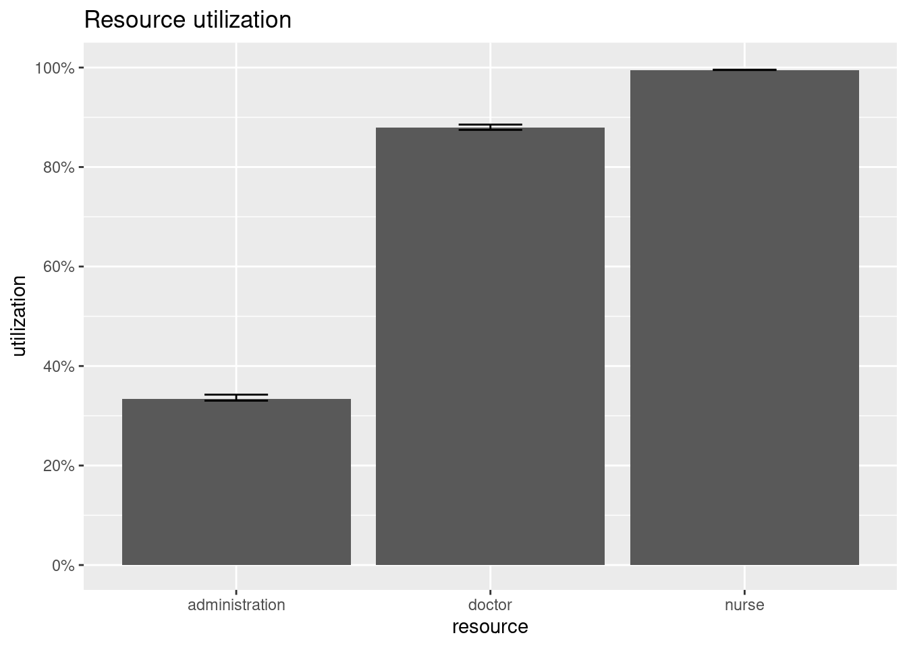
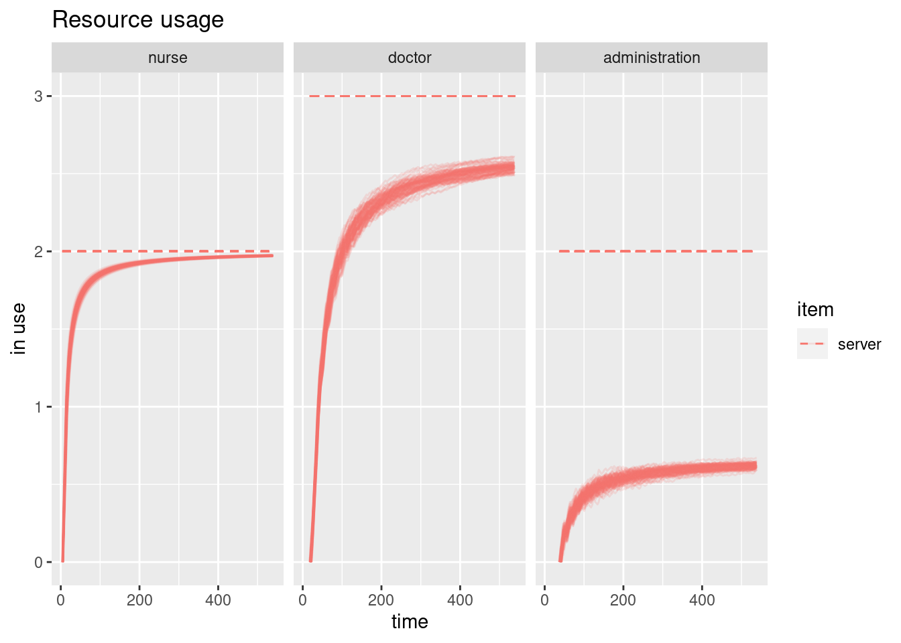
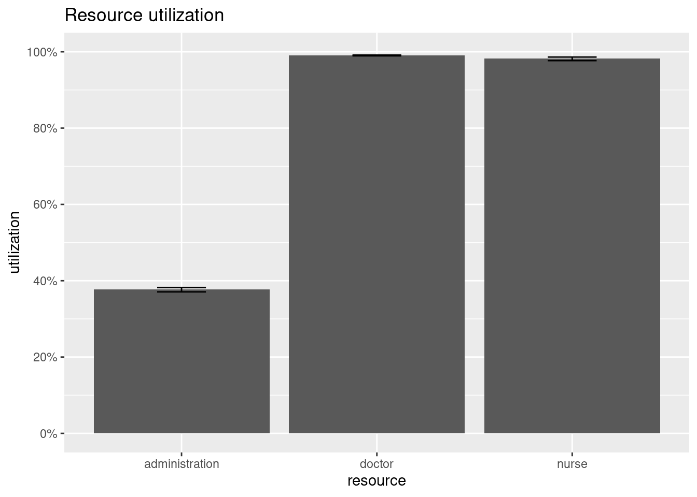
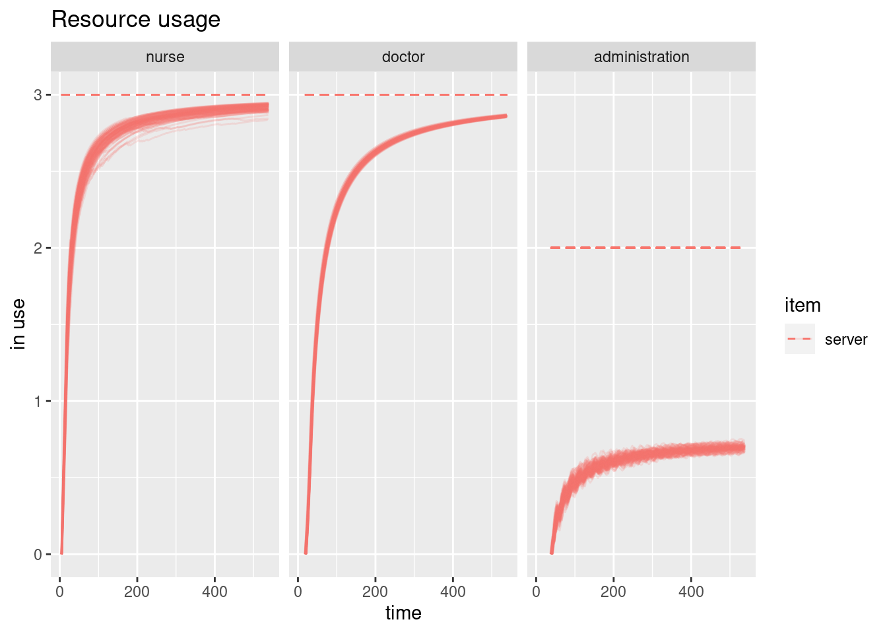
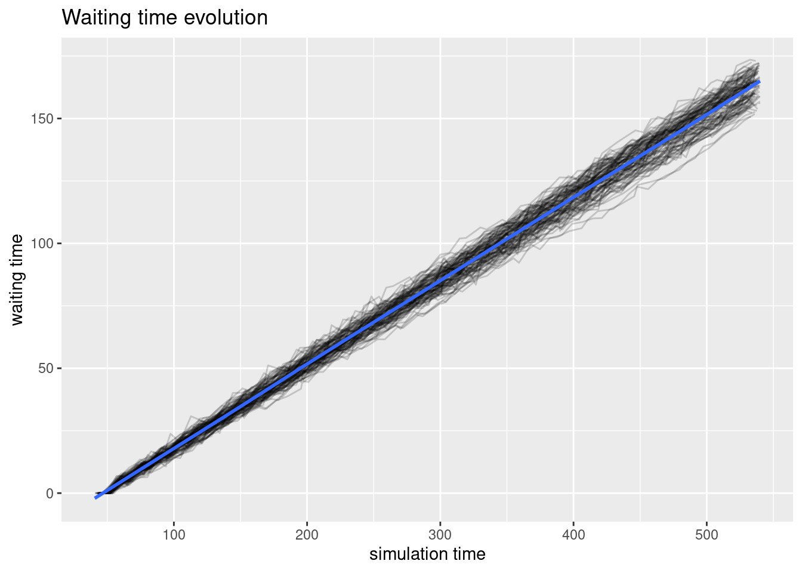

7.5 simmer Example
Let’s see an example in R of discrete event simulation in which we simulate the behavior of patients in a hospital.
First we have to load the simmer and magrittr libraries to do the simulation
library(simmer)
library(magrittr)With the simmer library we create a simulation environment that we are going to call outpatient clinic
env = simmer("outpatient clinic")
env## simmer environment: outpatient clinic | now: 0 | next:
## { Monitor: in memory }Second, we create the patient’s trajectory. We do this using the trajectory function of the simmer library.
Within this path we create the activities of the entities in the trajectory using the seize and release functions. Among these functions we introduce the time that each patient takes to carry out each event, that would correspond with the activity of the entities.
For example, in the case of the nurse, we seize the entity with the function seize, we give it a time limit of 15 minutes (we do this simulating a random number with a normal distribution of mean 15 and standard deviation 1), and we release the entity with the function release.
patient = trajectory("patients path") %>%
seize("nurse", 1) %>%
timeout(function() rnorm(1,15)) %>%
release("nurse", 1) %>%
seize("doctor", 1) %>%
timeout(function() rnorm(1,20)) %>%
release("doctor", 1) %>%
seize("administration", 1) %>%
timeout(function() rnorm(1,5)) %>%
release("administration", 1)Thirdly, we add the number of elements of the system using the add_resource function.
In this case we introduce in the system two elements of the nurse type, three of the doctor type and two of the administration type.
We also generate the patient entity that will interact with the whole system using the add_generator function. We will generate a patient every five minutes with a standard deviation of 0.5 minutes.
env %>%
add_resource("nurse", 2) %>%
add_resource("doctor", 3) %>%
add_resource("administration", 2) %>%
add_generator("patient", patient, function() rnorm(1,5,0.5))## simmer environment: outpatient clinic | now: 0 | next: 0
## { Monitor: in memory }
## { Resource: nurse | monitored: TRUE | server status: 0(2) | queue status: 0(Inf) }
## { Resource: doctor | monitored: TRUE | server status: 0(3) | queue status: 0(Inf) }
## { Resource: administration | monitored: TRUE | server status: 0(2) | queue status: 0(Inf) }
## { Source: patient | monitored: 1 | n_generated: 0 }We finally launch the simulation for 540 minutes. When the simulation is finished we can see how our resources are working in the simulated system.
env %>%
run(until=540)## simmer environment: outpatient clinic | now: 540 | next: 540.960538344821
## { Monitor: in memory }
## { Resource: nurse | monitored: TRUE | server status: 2(2) | queue status: 34(Inf) }
## { Resource: doctor | monitored: TRUE | server status: 3(3) | queue status: 0(Inf) }
## { Resource: administration | monitored: TRUE | server status: 1(2) | queue status: 0(Inf) }
## { Source: patient | monitored: 1 | n_generated: 108 }It is very easy to replicate a simulation multiple times using standard R functions.
envs <- lapply(1:100, function(i) {
simmer("outpatient clinic") %>%
add_resource("nurse", 2) %>%
add_resource("doctor", 3) %>%
add_resource("administration", 2) %>%
add_generator("patient", patient, function() rnorm(1,5,0.5)) %>%
run(540)
})This package provides some basic visualization tools to help you take a glance at your simulations quickly. There are three types of plot implemented with different metrics available:
- Plot of resources. Two metrics available:
- the usage of a resource over the simulation time frame.
- the utilization of specified resources in the simulation.
- Plot of arrivals. Three metrics available:
- activity time.
- waiting time.
- flow time.
- Plot of trayectories
With this graphs we can have a look at the overall resource utilization. The top and bottom of the error bars show respectively the 25th and 75th percentile of the utilization across all the replications. The top of the bar shows the median utilization.
library(simmer.plot)
resources <- get_mon_resources(envs)
plot(resources, metric = "utilization")
It is also possible to have a look at resources’ activity during the simulation.
plot(resources, metric = "usage", c("nurse", "doctor", "administration"), items = "server")
Next we can have a look at the evolution of the arrivals’ flow time during the simulation. In the plot below, each individual line represents a replication. A smooth line is drawn over them. All arrivals that didn’t finish their entire trajectory are excluded from the plot.
Similarly one can have a look at the evolution of the activity times with metric = "activity_time" and waiting times with metric = "waiting_time".
arrivals <- get_mon_arrivals(envs)
plot(arrivals, metric = "waiting_time")## `geom_smooth()` using method = 'gam' and formula 'y ~ s(x, bs = "cs")'
Simulation trajectories may grow considerably, and they are not always easy to inspect to ensure their compliance with the model that we are trying to build. In this example we are going to expose a simple one:
Now that we know a bit about the simmer tool we are going to make some changes in the system to try to improve its efficiency. From what we have seen in the examples, it seems that the nurses are overworked. We will first try to “hire” a new nurse to improve the system.
envs2 <- lapply(1:100, function(i) {
simmer("outpatient clinic") %>%
add_resource("nurse", 3) %>%
add_resource("doctor", 3) %>%
add_resource("administration", 2) %>%
add_generator("patient", patient, function() rnorm(1,5,0.5)) %>%
run(540)
})Let’s see how the system works with a new nurse through the plots:


## `geom_smooth()` using method = 'gam' and formula 'y ~ s(x, bs = "cs")'
We can see that both doctors and nurses are now working at 100% capacity. Now the problem seems to be coming from the administration. We are going to “fire” one of the workers in this area to try to improve the system.
envs3 <- lapply(1:100, function(i) {
simmer("outpatient clinic") %>%
add_resource("nurse", 3) %>%
add_resource("doctor", 3) %>%
add_resource("administration", 1) %>%
add_generator("patient", patient, function() rnorm(1,5,0.5)) %>%
run(540)
})Let’s see how the system works without a administration worker through the plots:


## `geom_smooth()` using method = 'gam' and formula 'y ~ s(x, bs = "cs")'
Great! We’ve found the perfect balance for our little hospital.